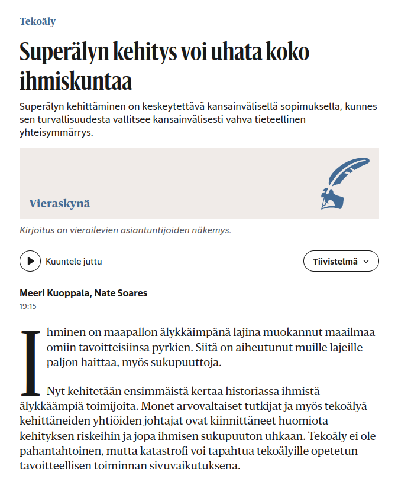

Superälyn kehitys voi uhata koko ihmiskuntaa

Kirjoitimme Nate Soaresin kanssa superälyn aiheuttamasta uhasta ihmiskunnalle. Soares on Machine Intelligence Research Instituten (MIRI) johtaja ja New York Times -bestsellerin If Anyone Builds It, Everyone Dies toinen kirjoittaja. Missään ei ole esitetty uskottavaa suunnitelmaa siitä, miten superälyn tavoitteita ohjataan niin, etteivät ne koidu ihmiskunnan kohtaloksi. Siksi Suomen on ajettava kansainvälistä sopimusta superälyn kehittämisen kieltämiseksi. Kielto on myös valvottavissa: edistyneimmät tekoälypiirit valmistaa pääosin TSMC Taiwanissa EUV-litografialaitteilla, joita vain alankomaalainen ASML pystyy valmistamaan.